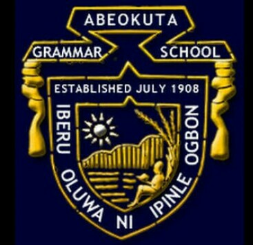

Abeokuta grammar school
click here to view more abeogram pictures.
...

The school was founded in 1908 by the Abeokuta District Church Council (Anglicans). Academically, students of Abeokuta Grammar School entered for examination by the Royal College of Preceptors in 1909 and sat for the Cambridge Local Examination in 1911. It became a mixed institution in 1914 with the admission of girls.
Abeokuta Grammar School is a secondary school in the city of Abeokuta, Ogun State, Nigeria. It is currently located at Idi-Aba area, of Abeokuta. Often called the first grammar school in Nigeria, it is attended by students from all parts of Nigeria, the West Coast of Africa, South Africa, Europe and even Asia.
Address: Idi-aba, Abeokuta.
- developer Facebook page
- know about developer education and school mates...